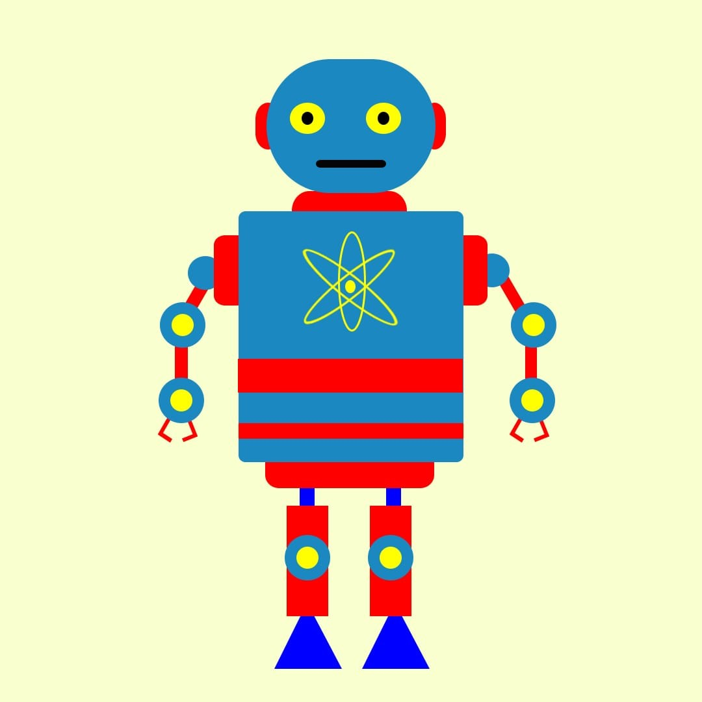

* During my internship at A&M Learning Education Institute, I focused intensively on graphic design, completing several challenging projects that significantly enhanced my skills. The program provided a hands-on approach to mastering various design tools and techniques, including Adobe Photoshop, Illustrator, and other industry-standard software.
Projects

project 1

project 2

project 3
project 4
